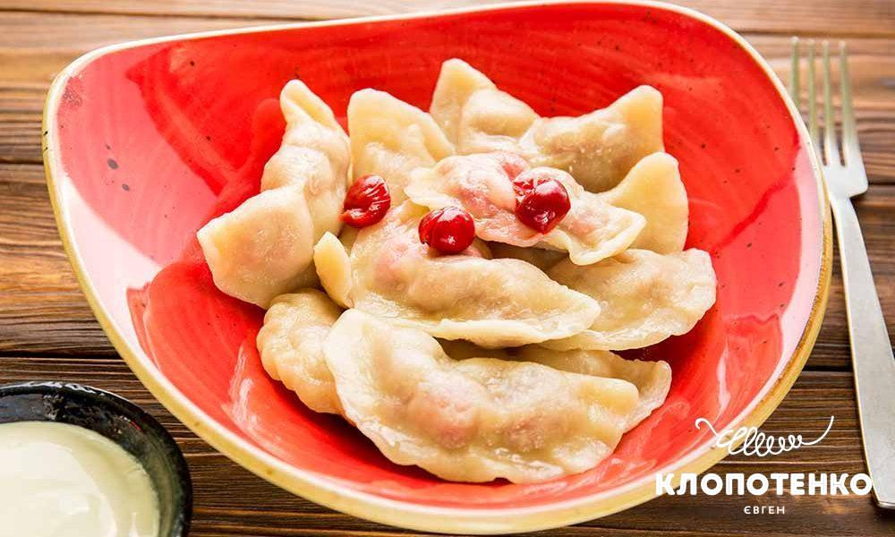

Sour Cherry Dumplings

Description
Stuffed with sour cherries sprinkled with a little sugar,
they're a sweet spin on Ukrainian dumplings that more commonly run savoury.
This dish straddles the line between sweet and savory; topped with smetana (sour cream),
one can eat cherry vareniki either as a main course or as a dessert.
Ingredients
Dough:
- 250 ml / 1 cup kefir or thin plain yoghurt
- 450 g / 3 cups all-purpose flour
- 0.5 tsp. salt
- 0.5 tsp. sugar
- 0.5 tsp. baking soda
- 1 egg
- 100 ml / 0.4 cup sour cream (for serving)
Filling:
- 400 g / 1 lb. sour cherries
- 1 tbsp. semolina
- 2-3 tbsp. sugar
- 50 g / 3½ tbsp. unsalted butter
Steps
- Make the dough for the dumplings. Mix flour with eggs, salt, sugar, kefir or thin plain yoghurt and baking soda.
The dough has to be soft, elastic and not sticky.
- Form a dough ball, move gently to an oiled bowl, and cover with a towel.
Leave it to rest for 15-20 minutes.
- In the meantime, make the filling. Pit the cherries (if you are cooking the dumplings out of season, defrost the cherries first).
Add 1 tbsp. sugar and semolina.
- Fold the dumplings by wrapping about a tablespoonful of cherries in a rolled out piece of dough.
You can add decorative pleats to the edge when folding the dumpling together.
-
Cook in salted water until the dumplings float to the top.
Remove them from boiling water and sprinkle them with sugar to make sure that they don’t stick.
Drizzle with melted unsalted butter.
- Serve with sour cream or cherry sauce (kysil).